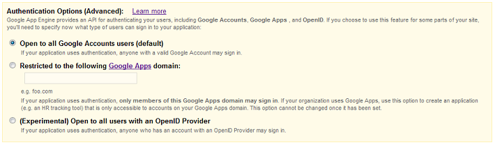

Users Python API Overview
App Engine applications can authenticate users using any one of three methods: Google Accounts, accounts on your own Google Apps domains, or OpenID identifiers. An application can detect whether the current user has signed in, and can redirect the user to the appropriate sign-in page to sign in or, if your app uses Google Accounts authentication, create a new account. While a user is signed in to the application, the app can access the user's email address (or OpenID identifier if your app is using OpenID), as well as a unique user ID. The app can also detect whether the current user is an administrator, making it easy to implement admin-only areas of the app.
Because OpenID identifers are provided by a large number of popular websites and services, including Google, supporting OpenID is a powerful way to integrate your app with Google App Marketplace and make it broadly accessible to users.
User Authentication in Python
The following example greets a user who has signed in to the app with a personalized message and a link to sign out. If the user is not signed in, the app offers a link to the sign-in page for Google Accounts, or to the page that requests an OpenID identifier.
from google.appengine.api import users
from google.appengine.ext import webapp
class MyHandler(webapp.RequestHandler):
def get(self):
user = users.get_current_user()
if user:
greeting = ("Welcome, %s! (<a href=\"%s\">sign out</a>)" %
(user.nickname(), users.create_logout_url("/")))
else:
greeting = ("<a href=\"%s\">Sign in or register</a>." %
users.create_login_url("/"))
self.response.out.write("<html><body>%s</body></html>" % greeting)
If your app uses OpenID and the user must sign in, your app will be redirected to the URL /_ah/login_required. You must create a page that lets the user sign in using an OpenID identifier. To specify this page, add an entry to your app.yaml file of the following form:
- url: /_ah/login_required
script: do_openid_login.py
Enforcing Sign In and Admin Access With app.yaml
If you have pages that require the user to be signed in in order to access, you can configure the handlers for those pages to require user sign-in with the app.yaml file. If a user accesses a URL configured to require sign-in and the user is not signed in, App Engine redirects the user to the appropriate sign-in page (when Google Accounts or Google Apps is used) or to /_ah/login_required (when OpenID is used), then directs the user back to your app's URL after signing in or registering successfully.
The handler configuration can also require that the user be a registered administrator for the application. This makes it easy to build administrator-only sections of the site, without having to implement a separate authorization mechanism.
To learn how to configure authentication for URLs, see Configuring a Python App: Requiring Login or Administrator Status.
Authentication Options
Your app can authenticate users using any one of 3 options:
- A Google Account
- An account on your Google Apps domain
- An OpenID identifier
About OpenID
OpenID is an open technology used for authenticating users across various web services. When a user creates an account on a service that acts as an OpenID provider, the user can then use a unique URL to that service as an OpenID identifier to sign in to any other service, known as an OpenID relying party, that allows OpenID sign-ins. For instance, if example.com is an OpenID provider, you can create an account on example.com, then use a URL given to you by that site that uniquely identifies you (such as yourname.example.com or http://example.com/openid/yourname) to sign in to sites that are OpenID relying parties.
If you set up your App Engine app to use OpenID for signing in, your app becomes an OpenID relying party. In other words, your app does not provide OpenID identifiers, but it requires them for sign in.
OpenID is one example of a type of authentication called Federated Login. Federated Login refers to any service that allows users to create a single ID or account and use it to authenticate with various services. OpenID is the only Federated Login supported by the Users service.
App Engine does not provide a user interface API for OpenID sign-in. Your OpenID sign-in user interface must allow the user to enter a URL that serves as an OpenID identifier. You might also include a pop-up menu listing the domain names of popular OpenID providers, along with a box for the user to type the unique part of the URL. For more information on the user interface for OpenID sign-in, see User Experience summary for Federated Login.
Note: App Engine does not support OpenID Attribute Exchange.
Choosing an Authentication Option
When you create your app, you choose the authentication option you want to use. By default, your app will use Google Accounts for authentication. To choose one of the other options, click Edit in the Authentication Options box. You'll then see the following:

Choose the option you want to use. Note that once you have created your app, your options for changing the authentication option are limited. In particular, you can only switch between Google Accounts and OpenID (Federated Login). If you do switch, user data in your datastore and user IDs are preserved and are still valid. Note that even if your app was written before OpenID support was added to App Engine, you can still switch to OpenID and access users' pre-existing data.
If you switch your app's authentication from Google Accounts to OpenID, your existing users can sign in to your app by using google.com as their OpenID provider.
To switch your app's authentication option from Google Accounts or OpenID, go to the Admin Console, click Application Settings, and choose the option you want from the Authentication Options menu. Be sure to click Save Settings.
Signing In and Out
An application can detect whether a user has signed in to the app with your app's chosen authentication option. If the user is not signed in, the app can direct the user to Google Accounts to sign in or create a new Google account, or to an OpenID sign-in page. The app gets the URL for the sign-in page by calling a method of the Users API. The app can display this URL as a link, or it can issue an HTTP redirect to the URL when the user visits a page that requires authentication.
If your app uses Google Accounts or Google Apps for authentication, the name of your application appears on the sign-in page when the user signs in to your application, using the application name you chose when registering the application. You can change your application name in the "Application Settings" section of the Admin Console.
If your app uses OpenID, the sign-in page displays the hostname instead of the app name.
Once the user has signed in or created a Google account, the user is redirected back to your application. The app provides the redirect URL to the method that generates the sign-in URL.
The Users API includes a method to generate a URL for signing out of the app. The sign-out URL de-authenticates the user from the app, then redirects back to the app's URL without displaying anything.
A user is not signed in to an application until she is prompted to do so by the app and enters her account's email address and password, or OpenID identifier. This is true even if the user has signed in to other applications using her Google Account.
While a user is signed in to an app, the app can access the account's email address or OpenID identifier for every request the user makes to the app. The app can also access a user ID that identifies the user uniquely, even if the user changes the email address for her account.
The app can also determine whether the current user is an administrator (a "developer") for the app. You can use this feature to build administrative features for the app, even if you don't authenticate other users. The Go, Java, and Python APIs make it easy to configure URLs as "administrator only."
Note: Every user has the same user ID for all App Engine applications. If your app uses the user ID in public data, such as by including it in a URL parameter, you should use a hash algorithm with a "salt" value added to obscure the ID. Exposing raw IDs could allow someone to associate a user's activity in one app with that in another, or get the user's email address by coercing the user to sign in to another app.
Users and the Datastore
The App Engine datastore supports storing the User object returned by the Users API as a special value type. As of this writing, User values do not behave as stable identifiers for users: if an app stores a User value and the user changes her Google Account email address, the User value will no longer refer to a valid user. In practice, users rarely change their Google Account email addresses, but it's worth designing for this rare case. A future update to the service may update User values in the datastore automatically. Until then, it is a best practice to not rely on the User value for this type of stability.
The User object exposes a unique user ID that is guaranteed to be stable for the lifetime of the user's account, even if the email address is changed. You can use this value in a datastore entity key or property value. If you want to perform datastore queries over both email addresses and user IDs, you can store both the User object and the user ID from the object as separate properties.
Google Accounts and the Development Server
The development server simulates the Google Accounts system using a dummy sign-in screen. When your application calls the Users API to get the URL for the sign-in screen, the API returns a special development server URL that prompts for an email address, but no password. You can type any email address into this prompt, and the app will behave as if you are signed in with an account with that address.
The dummy sign-in screen also includes a checkbox that indicates whether the dummy account is an administrator. If you check this box, the app will behave as if you are signed in using an administrator account.
Similarly, the Users API returns a sign-out URL that cancels the dummy sign-in.
The unique ID for a User object in the development server is calculated from the email address. Two unique email addresses always represent two unique users in the development server.